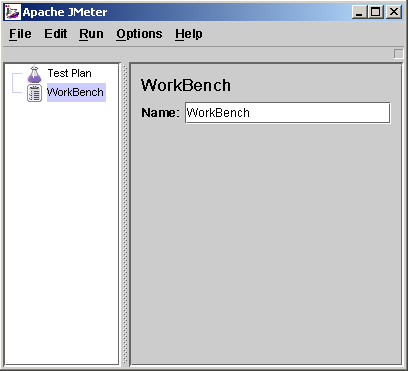
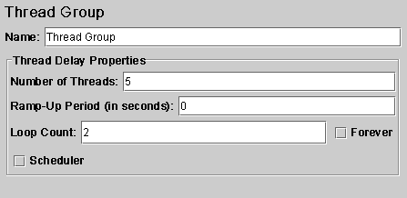
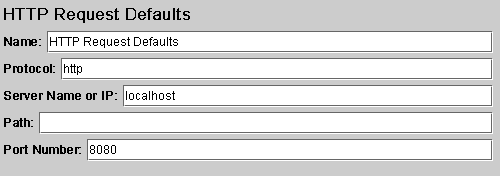
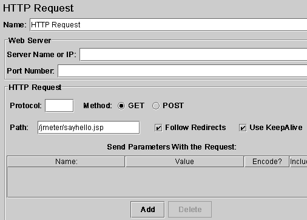
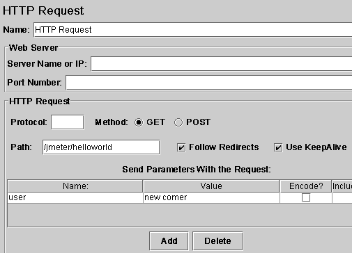
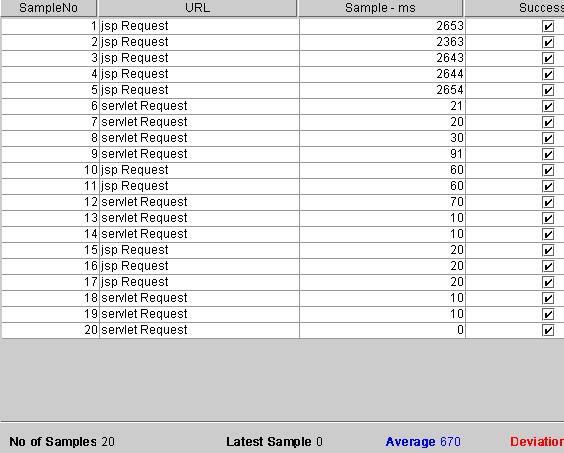
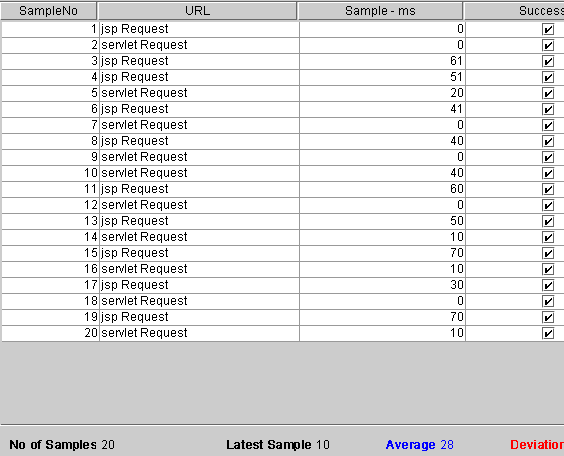

级别： 初级 肖菁 (jing.xiao@chinacreator.com), 软件工程师
2004 年 2 月 13 日 JMeter 是 Apache 组织的开放源代码项目，它是功能和性能测试的工具，100%的用java实现，最新的版本是1.9.1。本文中作者将向大家介绍如何使用 JMeter 进行测试。
JMeter是Apache组织的开放源代码项目，它是功能和性能测试的工具，100%的用java实现，最新的版本是1.9.1，大家可以到
http://jakarta.apache.org/jmeter/index.html下载源代码和查看相关文档。
JMeter作用领域
JMeter
可以用于测试静态或者动态资源的性能（文件、Servlets、Perl脚本、java对象、数据库和查询、ftp服务器或者其他的资源）。JMeter
用于模拟在服务器、网络或者其他对象上附加高负载以测试他们提供服务的受压能力，或者分析他们提供的服务在不同负载条件下的总性能情况。你可以用
JMeter提供的图形化界面分析性能指标或者在高负载情况下测试服务器/脚本/对象的行为。
使用JMeter测试Web应用
接下来的章节里，作者将详细的演示如何使用JMeter来测试Web应用的完整过程。
2.1 测试环境
作
者使用了Tomcat作为Web服务器进行测试，被测试的内容是一个jsp文件和一个servlet，jsp文件调用JavaBean、打印相关信
息，servlet接受用户参数、调用javabean、输出相关信息。详细的内容请参考作者提供的JMeter.war的内容。
2.2 安装启动JMeter
大
家可以到通过http://apache.linuxforum.net/dist/jakarta/jmeter/binaries/jakarta-
jmeter-1.9.1.zip下载JMeter的release版本，然后将下载的.zip文件解压缩到C:/JMeter（后面的文章中将使
用%JMeter%来引用这个目录）目录下。
现在，请使用%JMeter%/bin下面的jmeter.bat批处理文件来启动JMeter的可视化界面，下面的工作都将在这个可视化界面界面上进行操作。下面的图片是JMeter的可视化界面的屏幕截图。
图一： JMeter打开时的屏幕截图

2.3 建立测试计划（Test Plan）
测
试计划描述了执行测试过程中JMeter的执行过程和步骤，一个完整的测试计划包括一个或者多个线程组(Thread
Groups)、逻辑控制（Logic Controller）、实例产生控制器（Sample Generating
Controllers）、侦听器(Listener)、定时器（Timer）、比较（Assertions）、配置元素（Config
Elements）。打开JMeter时，它已经建立一个默认的测试计划,一个JMeter应用的实例只能建立或者打开一个测试计划。
现在我们开始填充一个测试计划的内容，这个测试计划向一个jsp文件和一个servlet发出请求，我们需要JMeter模拟五个请求者（也就是五个线程），每个请求者连续请求两次，下面的章节介绍了详细的操作步骤。
2.4 增加负载信息设置
这一步，我们将向测试计划中增加相关负载设置,是Jmeter知道我们需要模拟五个请求者，每个请求者在测试过程中连续请求两次。详细步骤如下：
1. 选中可视化界面中左边树的Test Plan节点，单击右键，选择Add'Thread Group，界面右边将会出现他的设置信息框。
2. Thread Group有三个和负载信息相关的参数：
Number of Threads： 设置发送请求的用户数目
Ramp-up period： 每个请求发生的总时间间隔，单位是秒。比如你的请求数目是5，而这个参数是10，那么每个请求之间的间隔就是10／5，也就是2秒
Loop Count： 请求发生的重复次数，如果选择后面的forever（默认），那么 请求将一直继续，如果不选择forever，而在输入框中输入数字，那么请求将重复 指定的次数，如果输入0，那么请求将执行一次。
根据我们演示例子的设计，我们应该将Number of Threads设置为5，Ramp-up period设置为0（也就是同时并发请求），不选中forever，在Loop Count后面的输入框中输入2，设置后的屏幕截图如下：
图二：设置好参数的Thread Group。

2.5 增加默认Http属性（可选）
实际的测试工作往往是针对同一个服务器上Web应用展开的,所以Jmeter提供了这样一种设置, 在默认Http属性设置需要被测试服务器的相关属性，以后的http请求设置中就可以忽略这些相同参数的设置,减少设置参数录入的时间。
我们这里将采用这种属性。你可以通过下面的步骤来设置默认http属性：
1. 选中可视化界面中左边树的Test Plan节点，单击右键，选择Add'config element'http request defaults，界面右边将会出现他的设置信息框。
2. 默认http属性的主要参数说明如下：
protocal：发送测试请求时使用的协议
server name or ip：被测试服务器的ip地址或者名字
path： 默认的起始位置。比如将path设置为／jmeter，那么所有的http请求的url中都将增加／jmeter路径。
port number： 服务器提供服务的端口号
我
们的测试计划将针对本机的Web服务器上的Web应用进行测试，所以protocal应该是http，ip使用localhost，因为这个web应用发
布的context路径是／jmeter，所以这里的path设置为／jmeter，因为使用Tomcat服务器，所以port
number是8080。设置后的屏幕截图如下：
图三： 测试计划中使用的默认Http参数

2.6 增加Http请求
现在我们需要增加http请求了，他也是我们测试的内容主体部分。你可以通过下面的步骤来增加性的http请求：
1. 选中可视化界面中左边树的Thread Group节点，单击右键，选择Add'sampler'http request，界面右边将会出现他的设置信息框。
2. 他的参数和2.5中介绍的http属性差不多，增加的属性中有发送http时方法的选择，你可以选择为get或者post。
我们现在增加两个http 请求，因为我们设置了默认的http属性，所以和默认http属性中相同的属性不再重复设置。设置后的屏幕截图如下：
图四：设置好的jsp测试请求

图五：设置好的Servlet测试请求（带参数）

2.7 增加Listener
增
加listener是为了记录测试信息并且可以使用Jmeter提供的可视化界面查看测试结果，里面有好几种结果分析方式可供选择，你可以根据自己习惯的
分析方式选择不同的结果显示方式，我们这里使用表格的形式来查看和分析测试结果。你可以通过下面的步骤来增加listener：
1. 选中可视化界面中左边树的Test Plan节点，单击右键，选择Add'listener'view result in table，界面右边将会出现他的设置信息和结果显示框。
2. 你可以设置界面上面的filename属性设置将测试结果保存到某个文件中
界面下面将使用表格显示测试结果，表格的第一列sampleno显示请求执行的顺序和编号，url显示请求发送的目标，sample－ms列显示这个请求完成耗费的时间，最后的success列显示改请求是否成功执行。
界面的最下面你还可以看到一些统计信息，最关心的应该是Average吧，也就是相应的平均时间。
2.8 开始执行测试计划
现在你可以通过单击菜单栏run -> Start开始执行测试计划了。下面这两个图是作者第一次、第二次执行该测试计划的结果图:
图六：第一次执行后的结果显示

图七：第二次执行的结果显示

大家可以看到第一次执行时的几个大时间值均来自于jsp request，这可以通过下面的理由进行解释：jsp执行前都需要被编译成.class文件。所以第二次的结果才是正常的结果。
总结
JMeter用于进行供能或者性能测试，通过使用JMeter提供的供能，我们可以可视化的制定测试计划：包括规定使用什么样的负载、测试什么内容、传入的参数，同时，他提供了好多种图形化的测试结果显示方式，使我们能够简单的开始测试工作和分析测试结果。
本
文中，作者根据自己的使用经验，详细演示了如何使用JMeter来进行Web测试的全部过程，简单的介绍了JMeter提供测试结果的图形化显示界面中相
关参数的含义。希望能够帮助大家学会使用JMeter的基本知识，同时，大家可以参考这个过程和JMeter的帮助文档来实现对java对象、数据库等的
测试过程。
工具下载：
1. tomcat
http://jakarta.apache.org/tomcat/index.html
2. JMeter
http://jakarta.apache.org/jmeter/index.html
参考资料
JMeter 的用户指南 ：
http://jakarta.apache.org/jmeter/usermanual/index.html
关于作者  | | | 肖菁，唯 J 族创始人，开源项目 BuildFileDesigner、V-Security
创始人，Open Source 推广人，主要研究 J2EE 编程技术、Web Service 技术以及他们在
WebSphere、WebLogic、 Apache 平台上的实现，拥有 IBM 的 Developing With Websphere
Studio 证书。
|
对本文的评价
|